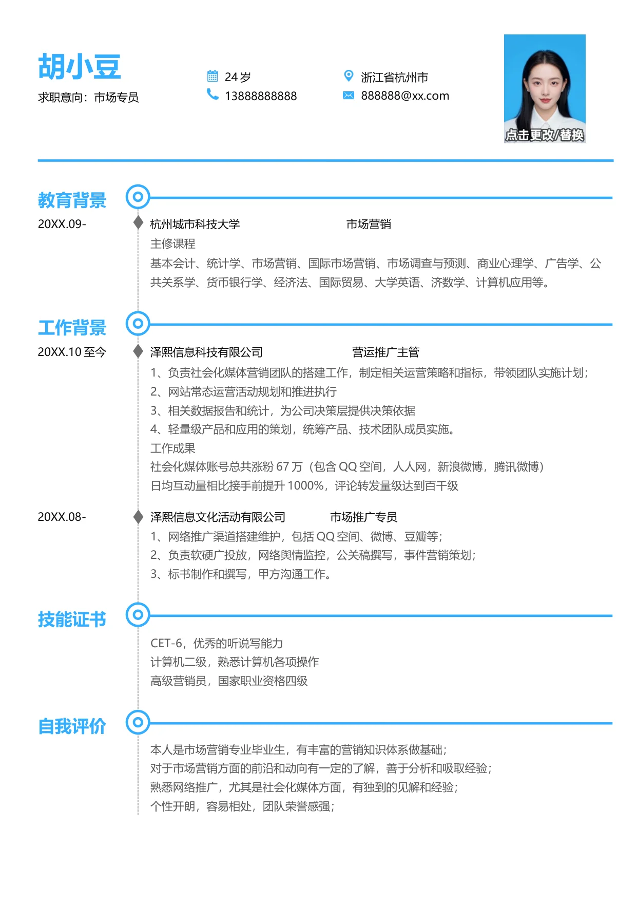

胡小豆
求职意向：市场专员
24 岁
13500000000
浙江省杭州市
0000@xx.com
20XX.09-
教育背景
工作背景
20XX.10 至今
20XX.08-
技能证书
自我评价
主修课程
基本会计、统计学、市场营销、国际市场营销、市场调查与预测、商业心理学、广告学、公
共关系学、货币银行学、经济法、国际贸易、大学英语、济数学、计算机应用等。
杭州城市科技大学 市场营销
泽熙信息科技有限公司 营运推广主管
1、负责社会化媒体营销团队的搭建工作，制定相关运营策略和指标，带领团队实施计划；
2、网站常态运营活动规划和推进执行
3、相关数据报告和统计，为公司决策层提供决策依据
4、轻量级产品和应用的策划，统筹产品、技术团队成员实施。
工作成果
社会化媒体账号总共涨粉67 万（包含QQ 空间，人人网，新浪微博，腾讯微博）
日均互动量相比接手前提升1000%，评论转发量级达到百千级
泽熙信息文化活动有限公司 市场推广专员
1、网络推广渠道搭建维护，包括QQ 空间、微博、豆瓣等；
2、负责软硬广投放，网络舆情监控，公关稿撰写，事件营销策划；
3、标书制作和撰写，甲方沟通工作。
CET-6，优秀的听说写能力
计算机二级，熟悉计算机各项操作
高级营销员，国家职业资格四级
本人是市场营销专业毕业生，有丰富的营销知识体系做基础；
对于市场营销方面的前沿和动向有一定的了解，善于分析和吸取经验；
熟悉网络推广，尤其是社会化媒体方面，有独到的见解和经验；
个性开朗，容易相处，团队荣誉感强；